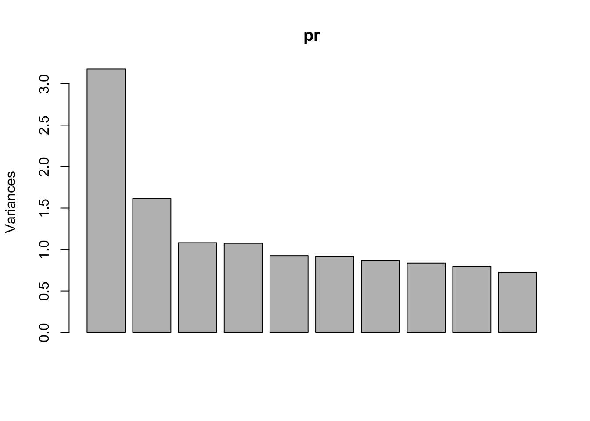
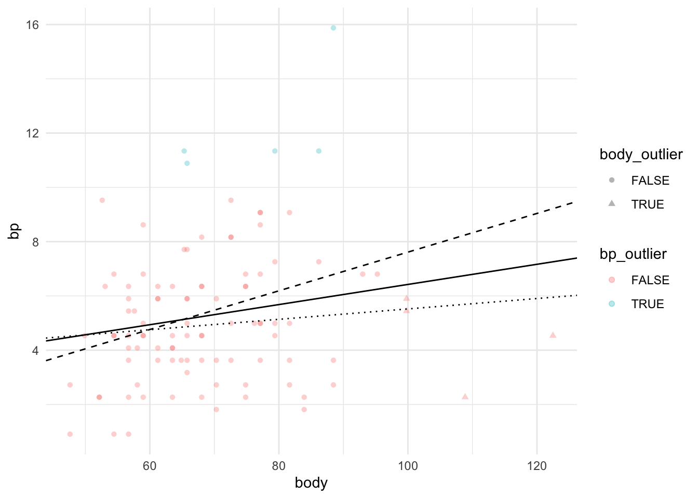

6 Неделя 2, День 4
6.1 Многомерные методы анализа данных
Сегодняшнее занятие будет посвящено многомерным методам анализа данных - методам работы с данными, в которых много колонок. Мы уже сталкивались с некоторыми многомерными методами, такими как множественная линейная регрессия. Поэтому вы знаете, что многомерность создает новые проблемы. Например, при множественных корреляциях или попарных сравнениях возникает проблема множественных сравнений, а при использовании множественной регрессии лишние предикторы могут ловить только шум и приводить к переобучению (если говорить в терминах машинного обучения). Короче говоря, больше - не значит лучше. Нужно четко понимать, зачем мы используем данные и что пытаемся измерить.
Однако в некоторых случаях мы в принципе не можем ничего интересного сделать с маленьким набором переменных. Много ли мы можем измерить личностным тестом с одним единственным вопросом? Можем ли мы точно оценить уровень интеллекта по успешности выполнения одного единственного задания? Очевидно, что нет. Более того, даже концепция интеллекта в современном его представлении появилась во многом благодаря разработке многомерных методов анализа! Ну или наоборот: исследования интеллекта подстегнули развитие многомерных методов.
Наши данные как раз очень многомерные. Это данные опроса с использованием очень большого количества вопросов. Мы возьмем только колонки, содержащие в названии “Op” - это ответы на всякие мировоззренческие вопросы, а это значит, что на них нет правильного ответа, а разные люди будут отвечать по-разному. Эти вопросы связаны с отношением к науке и технологиям, к “научному мировоззрению”. Например, “Scientific development is essential for improving people’s lives” и “Consuming genetically modified (GMO) food is perfectly safe”. Очевидно, что ответы на все эти вопросы будут как-то скоррелированы (положительно или отрицательно). С помощью таких методов как анализ главных компонент и факторный анализ можно уменьшить количество переменных и попытаться понять, что стоит на паттерном различий в ответах респондентов.
Самостоятельное задание:
- Сделайте data.table opinion, в котором будут только колонки с
"OP"или"Op"в названии.
library(data.table)
data <- fread("data/iGLAS for R course.csv")Для этого можно воспользоваться регулярными выражениями!
op <- grep("iO[pP]", names(data), value = TRUE)
opinion <- data[, ..op]- Удалите все колонки, где слишком много
NA, потом удалите строчки сNA:
Разобьем задачу на части: сначала создадим функцию, которая считает частоту NA в колонке:
frac_na <- function(x) mean(is.na(x))Потом применим эту фунцкию, чтобы выделить названия колонок, в которых NA меньше половины:
not_na_op <- sapply(opinion, frac_na) < 0.5
opinion <- opinion[, ..not_na_op]Осталось удалить относительно небольшое количество строчек с NA:
opinion <- opinion[complete.cases(opinion),]- Посчитайте матрицу корреляций opinion:
Напоминаю, что это можно сделать несколькими способами. Конечно, можно просто коррелировать каждую пару переменных с каждой:
opinion[, cor.test(iOp01, iOp03)]##
## Pearson's product-moment correlation
##
## data: iOp01 and iOp03
## t = 4.3619, df = 4981, p-value = 1.316e-05
## alternative hypothesis: true correlation is not equal to 0
## 95 percent confidence interval:
## 0.03397746 0.08929939
## sample estimates:
## cor
## 0.06168581Из этих данных можно доставать значений корреляций - и так повторить для каждой пары переменных. Это не очень удобно. Можно сделать проще - с помощью функции cor() посчитать всю матрицу корреляций.
opinion_cor <- cor(opinion)
opinion_cor## iOp01 iOp03 iOp04 iOp10 iOp11
## iOp01 1.000000000 0.06168581 -0.09790765 0.09710549 -0.005725227
## iOp03 0.061685805 1.00000000 -0.11774907 0.38227617 -0.125308613
## iOp04 -0.097907651 -0.11774907 1.00000000 -0.30967796 0.265454316
## iOp10 0.097105491 0.38227617 -0.30967796 1.00000000 -0.237845009
## iOp11 -0.005725227 -0.12530861 0.26545432 -0.23784501 1.000000000
## iOp02.5 -0.032672387 -0.10008960 0.30204766 -0.22103331 0.211416777
## iOp42 0.181658491 0.04159865 0.04141262 -0.03209103 0.082770905
## iOp43 -0.003794763 -0.02254635 0.12403584 -0.05257601 0.132697538
## iOp46 0.052547325 0.17397235 -0.14585023 0.22097407 -0.086064297
## iOp45 0.134881909 0.14934259 -0.41026076 0.28213000 -0.192350246
## iOP13.5 -0.040780421 -0.19078695 0.32713384 -0.29964666 0.215998965
## iOp44 0.004436168 0.03011891 0.07615861 -0.04030566 0.113388468
## iOp07.5 0.027425667 -0.07286297 0.18466025 -0.15426662 0.259294932
## iOp47 -0.012785049 -0.07423265 0.33009538 -0.27045062 0.312349968
## iOP12.5 0.168927842 0.12041632 -0.08985733 0.14446427 -0.068279608
## iOp02.5 iOp42 iOp43 iOp46 iOp45
## iOp01 -0.03267239 0.181658491 -0.003794763 0.05254732 0.134881909
## iOp03 -0.10008960 0.041598655 -0.022546352 0.17397235 0.149342590
## iOp04 0.30204766 0.041412616 0.124035835 -0.14585023 -0.410260758
## iOp10 -0.22103331 -0.032091028 -0.052576008 0.22097407 0.282129998
## iOp11 0.21141678 0.082770905 0.132697538 -0.08606430 -0.192350246
## iOp02.5 1.00000000 0.136295690 0.124001544 -0.15602734 -0.209353362
## iOp42 0.13629569 1.000000000 0.232244315 -0.03223088 -0.006915756
## iOp43 0.12400154 0.232244315 1.000000000 -0.05692068 -0.047643316
## iOp46 -0.15602734 -0.032230885 -0.056920680 1.00000000 0.173623846
## iOp45 -0.20935336 -0.006915756 -0.047643316 0.17362385 1.000000000
## iOP13.5 0.39518963 0.134509434 0.098597768 -0.15017812 -0.214800604
## iOp44 0.07653149 0.099007929 0.108009257 -0.03229476 -0.046154797
## iOp07.5 0.23017497 0.207500065 0.248239874 -0.10794585 -0.083293739
## iOp47 0.25021173 0.161576936 0.113803852 -0.10644965 -0.241338330
## iOP12.5 -0.07638594 0.094466167 -0.032880878 0.14201499 0.093801862
## iOP13.5 iOp44 iOp07.5 iOp47 iOP12.5
## iOp01 -0.04078042 0.004436168 0.02742567 -0.012785049 0.168927842
## iOp03 -0.19078695 0.030118914 -0.07286297 -0.074232647 0.120416318
## iOp04 0.32713384 0.076158609 0.18466025 0.330095376 -0.089857326
## iOp10 -0.29964666 -0.040305663 -0.15426662 -0.270450622 0.144464274
## iOp11 0.21599896 0.113388468 0.25929493 0.312349968 -0.068279608
## iOp02.5 0.39518963 0.076531485 0.23017497 0.250211729 -0.076385936
## iOp42 0.13450943 0.099007929 0.20750007 0.161576936 0.094466167
## iOp43 0.09859777 0.108009257 0.24823987 0.113803852 -0.032880878
## iOp46 -0.15017812 -0.032294760 -0.10794585 -0.106449653 0.142014989
## iOp45 -0.21480060 -0.046154797 -0.08329374 -0.241338330 0.093801862
## iOP13.5 1.00000000 0.100923055 0.21146886 0.315878637 -0.063165249
## iOp44 0.10092306 1.000000000 0.10301330 0.103123900 -0.014437449
## iOp07.5 0.21146886 0.103013296 1.00000000 0.296110105 -0.008059640
## iOp47 0.31587864 0.103123900 0.29611011 1.000000000 0.005139235
## iOP12.5 -0.06316525 -0.014437449 -0.00805964 0.005139235 1.000000000Ну а можно воспользоваться пакетом "psych", который создаст специальный объект классов "psych" и "corr.test". Внутри этого объекта будут и матрица корреляций и матрица p-values.
library(psych)
opinion_corr <- corr.test(opinion)
class(opinion_corr)## [1] "psych" "corr.test"class(opinion_corr$r)## [1] "matrix"Если Вы решите проверить, совпадают ли результаты этих двух способов, то увидите, что, внезапно, нет:
opinion_corr$r == opinion_cor## iOp01 iOp03 iOp04 iOp10 iOp11 iOp02.5 iOp42 iOp43 iOp46 iOp45
## iOp01 TRUE FALSE TRUE TRUE TRUE TRUE TRUE TRUE FALSE FALSE
## iOp03 FALSE TRUE FALSE TRUE TRUE FALSE TRUE FALSE TRUE FALSE
## iOp04 TRUE FALSE TRUE FALSE FALSE FALSE TRUE FALSE TRUE FALSE
## iOp10 TRUE TRUE FALSE TRUE FALSE FALSE FALSE FALSE FALSE TRUE
## iOp11 TRUE TRUE FALSE FALSE TRUE FALSE TRUE FALSE FALSE TRUE
## iOp02.5 TRUE FALSE FALSE FALSE FALSE TRUE FALSE FALSE TRUE TRUE
## iOp42 TRUE TRUE TRUE FALSE TRUE FALSE TRUE TRUE FALSE TRUE
## iOp43 TRUE FALSE FALSE FALSE FALSE FALSE TRUE TRUE TRUE TRUE
## iOp46 FALSE TRUE TRUE FALSE FALSE TRUE FALSE TRUE TRUE FALSE
## iOp45 FALSE FALSE FALSE TRUE TRUE TRUE TRUE TRUE FALSE TRUE
## iOP13.5 FALSE TRUE FALSE TRUE TRUE FALSE TRUE FALSE TRUE TRUE
## iOp44 TRUE FALSE TRUE FALSE FALSE FALSE TRUE FALSE TRUE FALSE
## iOp07.5 TRUE FALSE FALSE FALSE TRUE TRUE FALSE FALSE TRUE TRUE
## iOp47 FALSE TRUE TRUE FALSE TRUE FALSE TRUE FALSE TRUE TRUE
## iOP12.5 FALSE FALSE FALSE FALSE FALSE TRUE FALSE TRUE TRUE FALSE
## iOP13.5 iOp44 iOp07.5 iOp47 iOP12.5
## iOp01 FALSE TRUE TRUE FALSE FALSE
## iOp03 TRUE FALSE FALSE TRUE FALSE
## iOp04 FALSE TRUE FALSE TRUE FALSE
## iOp10 TRUE FALSE FALSE FALSE FALSE
## iOp11 TRUE FALSE TRUE TRUE FALSE
## iOp02.5 FALSE FALSE TRUE FALSE TRUE
## iOp42 TRUE TRUE FALSE TRUE FALSE
## iOp43 FALSE FALSE FALSE FALSE TRUE
## iOp46 TRUE TRUE TRUE TRUE TRUE
## iOp45 TRUE FALSE TRUE TRUE FALSE
## iOP13.5 TRUE FALSE TRUE FALSE TRUE
## iOp44 FALSE TRUE TRUE FALSE FALSE
## iOp07.5 TRUE TRUE TRUE TRUE FALSE
## iOp47 FALSE FALSE TRUE TRUE FALSE
## iOP12.5 TRUE FALSE FALSE FALSE TRUEПричина в том, что дробные числа хранятся в компьютере как степени двойки с разной степенью точности - поэтому могут возникать такие вот небольшие различия. А вот если округлить, то все значения окажутся одинаковыми:
round(opinion_corr$r,2) == round(opinion_cor,2)## iOp01 iOp03 iOp04 iOp10 iOp11 iOp02.5 iOp42 iOp43 iOp46 iOp45
## iOp01 TRUE TRUE TRUE TRUE TRUE TRUE TRUE TRUE TRUE TRUE
## iOp03 TRUE TRUE TRUE TRUE TRUE TRUE TRUE TRUE TRUE TRUE
## iOp04 TRUE TRUE TRUE TRUE TRUE TRUE TRUE TRUE TRUE TRUE
## iOp10 TRUE TRUE TRUE TRUE TRUE TRUE TRUE TRUE TRUE TRUE
## iOp11 TRUE TRUE TRUE TRUE TRUE TRUE TRUE TRUE TRUE TRUE
## iOp02.5 TRUE TRUE TRUE TRUE TRUE TRUE TRUE TRUE TRUE TRUE
## iOp42 TRUE TRUE TRUE TRUE TRUE TRUE TRUE TRUE TRUE TRUE
## iOp43 TRUE TRUE TRUE TRUE TRUE TRUE TRUE TRUE TRUE TRUE
## iOp46 TRUE TRUE TRUE TRUE TRUE TRUE TRUE TRUE TRUE TRUE
## iOp45 TRUE TRUE TRUE TRUE TRUE TRUE TRUE TRUE TRUE TRUE
## iOP13.5 TRUE TRUE TRUE TRUE TRUE TRUE TRUE TRUE TRUE TRUE
## iOp44 TRUE TRUE TRUE TRUE TRUE TRUE TRUE TRUE TRUE TRUE
## iOp07.5 TRUE TRUE TRUE TRUE TRUE TRUE TRUE TRUE TRUE TRUE
## iOp47 TRUE TRUE TRUE TRUE TRUE TRUE TRUE TRUE TRUE TRUE
## iOP12.5 TRUE TRUE TRUE TRUE TRUE TRUE TRUE TRUE TRUE TRUE
## iOP13.5 iOp44 iOp07.5 iOp47 iOP12.5
## iOp01 TRUE TRUE TRUE TRUE TRUE
## iOp03 TRUE TRUE TRUE TRUE TRUE
## iOp04 TRUE TRUE TRUE TRUE TRUE
## iOp10 TRUE TRUE TRUE TRUE TRUE
## iOp11 TRUE TRUE TRUE TRUE TRUE
## iOp02.5 TRUE TRUE TRUE TRUE TRUE
## iOp42 TRUE TRUE TRUE TRUE TRUE
## iOp43 TRUE TRUE TRUE TRUE TRUE
## iOp46 TRUE TRUE TRUE TRUE TRUE
## iOp45 TRUE TRUE TRUE TRUE TRUE
## iOP13.5 TRUE TRUE TRUE TRUE TRUE
## iOp44 TRUE TRUE TRUE TRUE TRUE
## iOp07.5 TRUE TRUE TRUE TRUE TRUE
## iOp47 TRUE TRUE TRUE TRUE TRUE
## iOP12.5 TRUE TRUE TRUE TRUE TRUEДавайте отдельно посмотрим на матрицу p-values (в нижнем углу - сами p-values, в верхнем - с коррекцией на множество сравнений):
round(opinion_corr$p, 3)## iOp01 iOp03 iOp04 iOp10 iOp11 iOp02.5 iOp42 iOp43 iOp46 iOp45
## iOp01 0.000 0.000 0.000 0.000 1 0.324 0.000 1.000 0.005 0.000
## iOp03 0.000 0.000 0.000 0.000 0 0.000 0.066 1.000 0.000 0.000
## iOp04 0.000 0.000 0.000 0.000 0 0.000 0.066 0.000 0.000 0.000
## iOp10 0.000 0.000 0.000 0.000 0 0.000 0.324 0.005 0.000 0.000
## iOp11 0.686 0.000 0.000 0.000 0 0.000 0.000 0.000 0.000 0.000
## iOp02.5 0.021 0.000 0.000 0.000 0 0.000 0.000 0.000 0.000 0.000
## iOp42 0.000 0.003 0.003 0.023 0 0.000 0.000 0.000 0.324 1.000
## iOp43 0.789 0.112 0.000 0.000 0 0.000 0.000 0.000 0.001 0.017
## iOp46 0.000 0.000 0.000 0.000 0 0.000 0.023 0.000 0.000 0.000
## iOp45 0.000 0.000 0.000 0.000 0 0.000 0.626 0.001 0.000 0.000
## iOP13.5 0.004 0.000 0.000 0.000 0 0.000 0.000 0.000 0.000 0.000
## iOp44 0.754 0.033 0.000 0.004 0 0.000 0.000 0.000 0.023 0.001
## iOp07.5 0.053 0.000 0.000 0.000 0 0.000 0.000 0.000 0.000 0.000
## iOp47 0.367 0.000 0.000 0.000 0 0.000 0.000 0.000 0.000 0.000
## iOP12.5 0.000 0.000 0.000 0.000 0 0.000 0.000 0.020 0.000 0.000
## iOP13.5 iOp44 iOp07.5 iOp47 iOP12.5
## iOp01 0.072 1.000 0.529 1.000 0.000
## iOp03 0.000 0.368 0.000 0.000 0.000
## iOp04 0.000 0.000 0.000 0.000 0.000
## iOp10 0.000 0.075 0.000 0.000 0.000
## iOp11 0.000 0.000 0.000 0.000 0.000
## iOp02.5 0.000 0.000 0.000 0.000 0.000
## iOp42 0.000 0.000 0.000 0.000 0.000
## iOp43 0.000 0.000 0.000 0.000 0.324
## iOp46 0.000 0.324 0.000 0.000 0.000
## iOp45 0.000 0.023 0.000 0.000 0.000
## iOP13.5 0.000 0.000 0.000 0.000 0.000
## iOp44 0.000 0.000 0.000 0.000 1.000
## iOp07.5 0.000 0.000 0.000 0.000 1.000
## iOp47 0.000 0.000 0.000 0.000 1.000
## iOP12.5 0.000 0.308 0.569 0.717 0.0006.2 Хитмап корреляций
Как видите, почти все коррелирует друг с другом, даже с учетом поправок. Такие множественные корреляции лучше всего смотреть с помощью хитмап-визуализации:
install.packages("corrplot")library(corrplot)## corrplot 0.84 loadedcorrplot(opinion_cor, method = "color", order = "hclust")Каждый квадратик - корреляция двух колонок. Синяя - положительная корреляция, красная - отрицательная. Чем насыщеннее цвет, тем сильнее корреляция (то есть выше значение по модулю). Колонки автоматически переставляются в нужном порядке для “группировки”.
На картинке можно увидеть, что есть две основных группы вопросов, которые положительно коррелируют внутри группы друг с другом и отрицательно - с вопросами из другой группы.
Различиные многомерные методы анализа позволяют нам выйти за пределы анализа отдельных пар корреляций и попытаться понять структуру, которая стоит за этой корреляционной матрицей. Поэтому во многих многомерных методах анализа данных именно матрица корреляций выступает в роли входных данных.
6.3 Анализ главных компонент (Principal component analysis)
Анализ главных компонент (АГК) известен как метод “уменьшения размерности”. Представьте, что вам дан набор данных с большим количеством количеством похожих переменных… Ох, надо же, наш датасет как раз именно такой!
Действительно, подобная ситуация часто возникает в опросниковых данных. Для начала представим ответы на вопросы как точки в многомерном пространстве. Ну, многомерные пространтсва представлять сложно, но вот два измерения - вполне, получится стандартная диаграмма рассеяния.
Суть АГК в том, чтобы повернуть оси этого пространства так, чтобы первые оси объясняли как можно больший разброс данных, а последние - как можно меньший. Тогда мы могли бы отбросить последние оси и не очень-то многое потерять в данных.
Для двух осей это выглядит вот так:

Первая ось должна минимизировать красные расстояния. Вторая ось будет просто перпендикулярна первой оси.
Математически, АГК - это нахождение собственных векторов и собственных значений матрицы корреляций или ковариаций. Собственные вектора - это такие особенные вектора матрицы, умножив которые на данную матрицу, можно получить тот же самый вектор (т.е. того же направления), но другой длины. А вот коэффициент множителя длины нового вектора - это собственное значение. В контексте АГК, собственные вектора - это новые оси (т.е. те самые новые компоненты), а собственные значения - это размер объясняемой дисперсии с помощью новых осей.
Итак, для начала нам нужно центрировать и нормировать данные - вычесть среднее и поделить на стандартное отклонение, т.е. посчитать z-оценки. Это нужно для того, чтобы сделать все шкалы равноценными. Это особенно важно делать когда разные шкалы используют несопоставимые единицы измерения. Скажем, одна колонка - это масса человека в килограммах, а другая - рост в метрах. Если применять АГК на этих данных, то ничего хорошего не выйдет: вклад роста будет слишком маленьким. А вот если мы сделаем z-преобразование, то приведем и вес, и рост к “общему знаменателю”.
В нашем случае это не так критично, поскольку во всех случаях испытуемые отвечают по одинаковой 7-балльной шкале.
opinion_scaled <- as.data.table(scale(opinion))В базовом R уже есть инструменты для АГК princomp() и prcomp(), считают они немного по-разному. Возьмем более рекомендуемый вариант, prcomp().
prcomp(opinion_scaled)## Standard deviations (1, .., p=15):
## [1] 1.7822858 1.2706276 1.0404145 1.0373031 0.9620233 0.9594423 0.9312585
## [8] 0.9151956 0.8932286 0.8511995 0.8189853 0.8003226 0.7568713 0.7509609
## [15] 0.7274690
##
## Rotation (n x k) = (15 x 15):
## PC1 PC2 PC3 PC4 PC5
## iOp01 -0.06943778 0.38155798 -0.19427723 0.4915882664 0.19803386
## iOp03 -0.20562301 0.30500547 0.47716338 -0.2907785685 -0.20900299
## iOp04 0.36177159 -0.08071718 0.34244974 -0.0003028303 -0.11323021
## iOp10 -0.34078095 0.23989272 0.19732683 -0.2139680548 -0.17104896
## iOp11 0.29931733 0.09490561 0.09826912 -0.0213681852 0.23233088
## iOp02.5 0.32443413 0.07300092 0.07894631 0.0320344221 -0.22999432
## iOp42 0.12845659 0.48677246 -0.23754435 0.0526953352 -0.14183215
## iOp43 0.16507540 0.31259574 -0.28949688 -0.4294394393 -0.28394314
## iOp46 -0.20512296 0.17552225 0.40029547 0.0300032371 0.04153754
## iOp45 -0.29856014 0.20970290 -0.31605182 -0.0187235987 0.07757389
## iOP13.5 0.35202797 0.02718279 0.05356841 0.1507532470 -0.03959969
## iOp44 0.11226061 0.20192394 0.07709088 -0.4107140003 0.80179338
## iOp07.5 0.26953643 0.30979313 -0.15452816 -0.1165836764 -0.10753154
## iOp47 0.33900566 0.15729302 0.24253529 0.1122834985 0.03911805
## iOP12.5 -0.10942316 0.33363638 0.26570013 0.4695379747 0.04614479
## PC6 PC7 PC8 PC9 PC10
## iOp01 -0.15062622 0.086873091 -0.36382134 0.434219525 -0.294884944
## iOp03 -0.23181854 0.028323653 -0.34924941 -0.041639577 0.099043057
## iOp04 -0.05029616 0.211504124 0.01004747 0.199516759 -0.159180605
## iOp10 -0.13095970 -0.053855368 -0.17025640 -0.051893607 -0.186371938
## iOp11 0.46069587 -0.051935276 -0.38659529 0.074794408 -0.174518794
## iOp02.5 -0.36039154 -0.451433548 0.02531913 0.005203201 -0.301394416
## iOp42 -0.19693292 0.151161377 0.15029456 0.208217043 0.586642570
## iOp43 0.18770535 0.248241667 0.31276168 0.154365239 -0.362684643
## iOp46 0.44736652 -0.352974058 0.39556974 0.473486940 0.079459941
## iOp45 0.11041482 -0.512305517 -0.04298693 -0.213770985 0.023419463
## iOP13.5 -0.26367332 -0.425241487 0.20911238 -0.010784156 -0.004230272
## iOp44 -0.28023510 0.019551048 0.17605295 -0.045507654 -0.042046820
## iOp07.5 0.30741820 -0.121070383 -0.17902370 -0.366582757 -0.039498614
## iOp47 0.17602641 0.006911587 -0.16548973 -0.174333373 0.417089629
## iOP12.5 0.04333967 0.264739933 0.39189684 -0.507508839 -0.249004492
## PC11 PC12 PC13 PC14 PC15
## iOp01 0.268041765 -0.10759740 -0.017454400 0.05583458 -0.07759637
## iOp03 -0.028268175 -0.14763906 -0.207863748 -0.27700923 -0.42210555
## iOp04 0.189110923 -0.09478334 -0.006973371 -0.52100969 0.55114105
## iOp10 -0.047812745 0.09035923 0.551647315 0.34238261 0.44032361
## iOp11 -0.639556895 0.07498348 0.119986008 -0.07704203 -0.04334111
## iOp02.5 -0.162737844 0.26521465 -0.464150949 0.28093279 0.11355379
## iOp42 -0.293136056 0.26303996 0.050047991 -0.12403748 0.14999167
## iOp43 -0.029759426 -0.37536418 -0.058696637 0.13243197 -0.11563024
## iOp46 0.156393341 0.14514663 -0.053539827 0.04183396 -0.04903883
## iOp45 -0.074520395 -0.37759488 -0.197166575 -0.35794150 0.35036950
## iOP13.5 -0.008700931 -0.29354808 0.586329244 -0.15432949 -0.31640366
## iOp44 0.088893908 0.05750762 -0.038890456 0.02630346 0.04428991
## iOp07.5 0.516696787 0.44286099 0.106674560 -0.14620017 -0.09660579
## iOp47 0.174231721 -0.46253063 -0.123396692 0.48427005 0.17481876
## iOP12.5 -0.177910829 0.01561185 -0.051961030 -0.05844298 -0.01982064В принципе, z-преобразование было делать необязательно, prcomp() умеет делать это сам:
pr <- prcomp(opinion, scale. = TRUE)
pr## Standard deviations (1, .., p=15):
## [1] 1.7822858 1.2706276 1.0404145 1.0373031 0.9620233 0.9594423 0.9312585
## [8] 0.9151956 0.8932286 0.8511995 0.8189853 0.8003226 0.7568713 0.7509609
## [15] 0.7274690
##
## Rotation (n x k) = (15 x 15):
## PC1 PC2 PC3 PC4 PC5
## iOp01 -0.06943778 0.38155798 -0.19427723 0.4915882664 0.19803386
## iOp03 -0.20562301 0.30500547 0.47716338 -0.2907785685 -0.20900299
## iOp04 0.36177159 -0.08071718 0.34244974 -0.0003028303 -0.11323021
## iOp10 -0.34078095 0.23989272 0.19732683 -0.2139680548 -0.17104896
## iOp11 0.29931733 0.09490561 0.09826912 -0.0213681852 0.23233088
## iOp02.5 0.32443413 0.07300092 0.07894631 0.0320344221 -0.22999432
## iOp42 0.12845659 0.48677246 -0.23754435 0.0526953352 -0.14183215
## iOp43 0.16507540 0.31259574 -0.28949688 -0.4294394393 -0.28394314
## iOp46 -0.20512296 0.17552225 0.40029547 0.0300032371 0.04153754
## iOp45 -0.29856014 0.20970290 -0.31605182 -0.0187235987 0.07757389
## iOP13.5 0.35202797 0.02718279 0.05356841 0.1507532470 -0.03959969
## iOp44 0.11226061 0.20192394 0.07709088 -0.4107140003 0.80179338
## iOp07.5 0.26953643 0.30979313 -0.15452816 -0.1165836764 -0.10753154
## iOp47 0.33900566 0.15729302 0.24253529 0.1122834985 0.03911805
## iOP12.5 -0.10942316 0.33363638 0.26570013 0.4695379747 0.04614479
## PC6 PC7 PC8 PC9 PC10
## iOp01 -0.15062622 0.086873091 -0.36382134 0.434219525 -0.294884944
## iOp03 -0.23181854 0.028323653 -0.34924941 -0.041639577 0.099043057
## iOp04 -0.05029616 0.211504124 0.01004747 0.199516759 -0.159180605
## iOp10 -0.13095970 -0.053855368 -0.17025640 -0.051893607 -0.186371938
## iOp11 0.46069587 -0.051935276 -0.38659529 0.074794408 -0.174518794
## iOp02.5 -0.36039154 -0.451433548 0.02531913 0.005203201 -0.301394416
## iOp42 -0.19693292 0.151161377 0.15029456 0.208217043 0.586642570
## iOp43 0.18770535 0.248241667 0.31276168 0.154365239 -0.362684643
## iOp46 0.44736652 -0.352974058 0.39556974 0.473486940 0.079459941
## iOp45 0.11041482 -0.512305517 -0.04298693 -0.213770985 0.023419463
## iOP13.5 -0.26367332 -0.425241487 0.20911238 -0.010784156 -0.004230272
## iOp44 -0.28023510 0.019551048 0.17605295 -0.045507654 -0.042046820
## iOp07.5 0.30741820 -0.121070383 -0.17902370 -0.366582757 -0.039498614
## iOp47 0.17602641 0.006911587 -0.16548973 -0.174333373 0.417089629
## iOP12.5 0.04333967 0.264739933 0.39189684 -0.507508839 -0.249004492
## PC11 PC12 PC13 PC14 PC15
## iOp01 0.268041765 -0.10759740 -0.017454400 0.05583458 -0.07759637
## iOp03 -0.028268175 -0.14763906 -0.207863748 -0.27700923 -0.42210555
## iOp04 0.189110923 -0.09478334 -0.006973371 -0.52100969 0.55114105
## iOp10 -0.047812745 0.09035923 0.551647315 0.34238261 0.44032361
## iOp11 -0.639556895 0.07498348 0.119986008 -0.07704203 -0.04334111
## iOp02.5 -0.162737844 0.26521465 -0.464150949 0.28093279 0.11355379
## iOp42 -0.293136056 0.26303996 0.050047991 -0.12403748 0.14999167
## iOp43 -0.029759426 -0.37536418 -0.058696637 0.13243197 -0.11563024
## iOp46 0.156393341 0.14514663 -0.053539827 0.04183396 -0.04903883
## iOp45 -0.074520395 -0.37759488 -0.197166575 -0.35794150 0.35036950
## iOP13.5 -0.008700931 -0.29354808 0.586329244 -0.15432949 -0.31640366
## iOp44 0.088893908 0.05750762 -0.038890456 0.02630346 0.04428991
## iOp07.5 0.516696787 0.44286099 0.106674560 -0.14620017 -0.09660579
## iOp47 0.174231721 -0.46253063 -0.123396692 0.48427005 0.17481876
## iOP12.5 -0.177910829 0.01561185 -0.051961030 -0.05844298 -0.01982064summary() выдаст полезную информацию, в частности, долю объясненной дисперсии и кумулятивную долю объясненной дисперсии
summary(pr)## Importance of components:
## PC1 PC2 PC3 PC4 PC5 PC6
## Standard deviation 1.7823 1.2706 1.04041 1.03730 0.9620 0.95944
## Proportion of Variance 0.2118 0.1076 0.07216 0.07173 0.0617 0.06137
## Cumulative Proportion 0.2118 0.3194 0.39157 0.46330 0.5250 0.58637
## PC7 PC8 PC9 PC10 PC11 PC12
## Standard deviation 0.93126 0.91520 0.89323 0.8512 0.81899 0.8003
## Proportion of Variance 0.05782 0.05584 0.05319 0.0483 0.04472 0.0427
## Cumulative Proportion 0.64418 0.70002 0.75321 0.8015 0.84623 0.8889
## PC13 PC14 PC15
## Standard deviation 0.75687 0.7510 0.72747
## Proportion of Variance 0.03819 0.0376 0.03528
## Cumulative Proportion 0.92712 0.9647 1.000006.3.1 Количество извлекаемых компонент
Визуализация объясненных дисперсий с помощью каждого фактора может использоваться для того, чтобы решить, какие оси оставить, а какие отбросить.
plot(pr)
Если после какой-то шкалы график резко “падает” и становится ровным, то можно предположить, что эти последние шкалы представляют некоторый “шум” в данных - их мы и собираемся отбросить.
В пакете psych есть функция fa.parallel(), которая позволяет не только визуализировать, но и дает пользователю количество рекомендуемых компонент. Важно понимать, что эти границы условны, поэтому не стоит безусловно доверять этой функции.
psych::fa.parallel(opinion)## Parallel analysis suggests that the number of factors = 6 and the number of components = 4Можно визуализировать данные в новых осях (например, в первых двух):
plot(pr$x[,1:2])Наконец, выбрать желаемое количество компонент можно через параметр rank. =
prcomp(opinion, scale. = TRUE, rank. = 4)## Standard deviations (1, .., p=15):
## [1] 1.7822858 1.2706276 1.0404145 1.0373031 0.9620233 0.9594423 0.9312585
## [8] 0.9151956 0.8932286 0.8511995 0.8189853 0.8003226 0.7568713 0.7509609
## [15] 0.7274690
##
## Rotation (n x k) = (15 x 4):
## PC1 PC2 PC3 PC4
## iOp01 -0.06943778 0.38155798 -0.19427723 0.4915882664
## iOp03 -0.20562301 0.30500547 0.47716338 -0.2907785685
## iOp04 0.36177159 -0.08071718 0.34244974 -0.0003028303
## iOp10 -0.34078095 0.23989272 0.19732683 -0.2139680548
## iOp11 0.29931733 0.09490561 0.09826912 -0.0213681852
## iOp02.5 0.32443413 0.07300092 0.07894631 0.0320344221
## iOp42 0.12845659 0.48677246 -0.23754435 0.0526953352
## iOp43 0.16507540 0.31259574 -0.28949688 -0.4294394393
## iOp46 -0.20512296 0.17552225 0.40029547 0.0300032371
## iOp45 -0.29856014 0.20970290 -0.31605182 -0.0187235987
## iOP13.5 0.35202797 0.02718279 0.05356841 0.1507532470
## iOp44 0.11226061 0.20192394 0.07709088 -0.4107140003
## iOp07.5 0.26953643 0.30979313 -0.15452816 -0.1165836764
## iOp47 0.33900566 0.15729302 0.24253529 0.1122834985
## iOP12.5 -0.10942316 0.33363638 0.26570013 0.46953797476.4 Эксплораторный факторный анализ
Чарльз Спирмен был один из пионеров использования коэффициентов корреляции в научных исследованиях. Он уже в самом начале XX века использовал корреляционные матрицы для исследования связи разных тестов, которые проходили школьники. Он обнаружил, что оценки по самым разным тестам коррелируют друг с другом. Короче говоря, если учащийся хорошо справляется с математикой, то и с музыкой у него, скорее всего, будет хорошо.
Чарльз Спирмен предположил, что за этими шкалами стоит некоторый единый фактор, который он назвал фактором g (от слова general) - общий интеллект. С точки зрения Спирмена, общий интеллект - это латентный фактор, который объясняет существующие корреляции между баллами за разные тесты, а то, что общий интеллект не объясняет, - это отдельные способности.
Для того, чтобы доказать свою теорию, Чарльз Спирмен придумал эксплораторный факторный анализ (ЭФА; exploratory factor analysis)1.
Суть ЭФА несколько сложнее АГК. Если в АГК мы просто вертим оси исходного пространства, чтобы максимизировать дисперсию первых осей и минимизировать дисперсию последних, то в ЭФА мы строим модель с заданным количеством латентных (т.е. “скрытых”) переменных, которые должны объяснять общую дисперсию наблюдаемых переменных и быть ортогональными (перпендикулярными) друг другу. Ну а все необъясненное остается влиянием независимых индивидуальных факторов. Кроме того, полученные латентные факторы можно еще “повращать” для большей интерпретируемости латентных факторов. Причем “вращение” может быть как ортогональным (самое распространенное - варимакс) или косоугольным (например, облимин). В первом случае факторы останутся нескоррелированными, во втором случае - нет.
Для ЭФА есть много пакетов, более того, уже знакомый нам psych умеет делать ЭФА.
fa_none_fit <- factanal(opinion_scaled, factors = 6, rotation = "varimax")
fa_none_fit##
## Call:
## factanal(x = opinion_scaled, factors = 6, rotation = "varimax")
##
## Uniquenesses:
## iOp01 iOp03 iOp04 iOp10 iOp11 iOp02.5 iOp42 iOp43 iOp46
## 0.842 0.633 0.539 0.516 0.730 0.742 0.512 0.775 0.863
## iOp45 iOP13.5 iOp44 iOp07.5 iOp47 iOP12.5
## 0.605 0.005 0.948 0.642 0.614 0.828
##
## Loadings:
## Factor1 Factor2 Factor3 Factor4 Factor5 Factor6
## iOp01 -0.111 0.371
## iOp03 0.587 0.109
## iOp04 0.152 0.569 0.279 -0.113 -0.136
## iOp10 -0.103 -0.270 -0.208 0.592
## iOp11 0.188 0.447 -0.151
## iOp02.5 0.279 0.246 0.247 -0.120 0.196
## iOp42 0.569 0.391
## iOp43 0.197 0.426
## iOp46 -0.137 0.266 -0.126 0.160
## iOp45 -0.575 -0.102 0.168 0.150
## iOP13.5 0.939 0.173 0.198 -0.192
## iOp44 0.145 0.154
## iOp07.5 0.496 0.316
## iOp47 0.148 0.313 0.482 -0.115 0.115
## iOP12.5 0.165 0.374
##
## Factor1 Factor2 Factor3 Factor4 Factor5 Factor6
## SS loadings 1.044 0.990 0.977 0.934 0.724 0.538
## Proportion Var 0.070 0.066 0.065 0.062 0.048 0.036
## Cumulative Var 0.070 0.136 0.201 0.263 0.311 0.347
##
## Test of the hypothesis that 6 factors are sufficient.
## The chi square statistic is 130.78 on 30 degrees of freedom.
## The p-value is 1.52e-14Получаемый результат имеет примерно тот же вид, что и при АГК. Нужно смотреть на кумулятивную объясненную дисперсию, а также смотреть на факторные нагрузки - связь латентных факторов с наблюдаемыми шкалами. Особенно нас интересуют факторные нагрузки близкие к 1 и -1 (значения близкие к нулю скрыты). Анализируя эти шкалы, можно сделать вывод о том, что из себя представляет латентный фактор содержательно. Возьмем для примера второй фактор: в нем есть как выраженные положительные, так и отрицательные нагрузки:
“Consuming genetically modified (GMO) food is perfectly safe” - положительная нагрузка 0.569
“When you are ill, how likely are you to turn to alternative medicine (such as homeopathy) rather than seeking treatment from conventional medicine?” - отрицательная нагрузка -0.575
Можно предположить, что этот фактор означает доверие к академической науке: те, у кого большое значение по этому фактору не боятся ГМО, а те, у кого низкое значение, - верят в эффективность гомеопатии.
Давайте визуализируем с помощью ggplot2 факторные нагрузки по первым двум факторам:
load <- fa_none_fit$loadings[,1:2]
library(ggplot2)##
## Attaching package: 'ggplot2'## The following objects are masked from 'package:psych':
##
## %+%, alphaload_dt <- as.data.table(load)
load_dt$names <- rownames(load)
load## Factor1 Factor2
## iOp01 -0.01566970 -0.110771479
## iOp03 -0.07033983 -0.025900326
## iOp04 0.15240114 0.568881912
## iOp10 -0.10317583 -0.270441390
## iOp11 0.06172226 0.188263581
## iOp02.5 0.27880820 0.246291576
## iOp42 0.06696601 0.060755424
## iOp43 0.01663996 0.011630244
## iOp46 -0.05416371 -0.137096836
## iOp45 -0.06206774 -0.574575950
## iOP13.5 0.93850496 0.172697022
## iOp44 0.05999292 0.049111124
## iOp07.5 0.07140540 0.009635239
## iOp47 0.14796036 0.312706149
## iOP12.5 -0.01468160 -0.040392354ggplot(load_dt, aes(x = Factor1, y = Factor2))+
geom_point()+
geom_text(aes(label = names), vjust = 1, hjust = 1)
6.5 Конфирматорный факторный анализ
Как следует из названия, если ЭФА - это более эксплораторный метод анализа, то конфирматорный факторный анализ (КФА) предназначен для проверки моделей о структуре факторов.
Как и в ЭФА, в КФА есть неизмеряемые латентные переменные, которые как-то объясняют измеряемые переменные. Однако если в ЭФА мы просто строим модель, где все латентные переменные объясняют все измеряемые переменные, то в КФА мы можем проверять более специфическую модель, где отдельные латентные переменные связаны только с определенными измеряемыми переменными. Кроме того, мы можем задавать (или не задавать) корреляции между латентными факторами и ошибками.
Самый распространенный пакет для КФА в R - lavaan (LAtent VAriable ANalysis). Впрочем, это один из самых распространенных инструментов для КФА (и структурного моделирования, о чем будет позже) вообще!
Давайте сразу его установим и загрузим данные по 9 тестам младшеклассников.
install.packages("lavaan")library(lavaan)## This is lavaan 0.6-4## lavaan is BETA software! Please report any bugs.##
## Attaching package: 'lavaan'## The following object is masked from 'package:psych':
##
## cor2covdata(HolzingerSwineford1939)Модель предполагает, наличие трех коррелирующих друг с другом факторов: визуальный фактор (задания х1, х2, х3), текстовый фактор (задания х4, х5, х6) и фактор скорости (задания х7, х8, х9). Для того, чтобы задать такую модель, у lavaan есть свой синтаксис. Описание модели записывается в строковую переменную.
HS_model <- "
visual =~ x1 + x2 + x3
textual =~ x4 + x5 + x6
speed =~ x7 + x8 + x9
"Затем происходит фиттинг модели с помощью функции cfa()
hs_cfa <- cfa(HS_model, data = HolzingerSwineford1939)
summary(hs_cfa)## lavaan 0.6-4 ended normally after 35 iterations
##
## Optimization method NLMINB
## Number of free parameters 21
##
## Number of observations 301
##
## Estimator ML
## Model Fit Test Statistic 85.306
## Degrees of freedom 24
## P-value (Chi-square) 0.000
##
## Parameter Estimates:
##
## Information Expected
## Information saturated (h1) model Structured
## Standard Errors Standard
##
## Latent Variables:
## Estimate Std.Err z-value P(>|z|)
## visual =~
## x1 1.000
## x2 0.554 0.100 5.554 0.000
## x3 0.729 0.109 6.685 0.000
## textual =~
## x4 1.000
## x5 1.113 0.065 17.014 0.000
## x6 0.926 0.055 16.703 0.000
## speed =~
## x7 1.000
## x8 1.180 0.165 7.152 0.000
## x9 1.082 0.151 7.155 0.000
##
## Covariances:
## Estimate Std.Err z-value P(>|z|)
## visual ~~
## textual 0.408 0.074 5.552 0.000
## speed 0.262 0.056 4.660 0.000
## textual ~~
## speed 0.173 0.049 3.518 0.000
##
## Variances:
## Estimate Std.Err z-value P(>|z|)
## .x1 0.549 0.114 4.833 0.000
## .x2 1.134 0.102 11.146 0.000
## .x3 0.844 0.091 9.317 0.000
## .x4 0.371 0.048 7.779 0.000
## .x5 0.446 0.058 7.642 0.000
## .x6 0.356 0.043 8.277 0.000
## .x7 0.799 0.081 9.823 0.000
## .x8 0.488 0.074 6.573 0.000
## .x9 0.566 0.071 8.003 0.000
## visual 0.809 0.145 5.564 0.000
## textual 0.979 0.112 8.737 0.000
## speed 0.384 0.086 4.451 0.000Здесь мы можем увидеть, сошлась ли модель, оценки качества модели и оценки интересующих параметров модели.
Модели для КФА принято рисовать в виде блок-схем с кружочками, квадратиками и стрелочками. Есть несколько вариантов, как именно отрисовывать модели, например, нужно ли отдельным кружочком рисовать ошибку для каждой измеряемой модели. Но, в целом, правила такие: круги - это латентные переменные, квадраты - измеряемые переменные, стрелочки - ассоциации между ними.
install.packages("semPlot")library(semPlot)## Registered S3 methods overwritten by 'huge':
## method from
## plot.sim BDgraph
## print.sim BDgraphsemPaths(hs_cfa)
КФА лежит в основе структурного моделирования (structural equation modelling, SEM). По сути, структурное моделирование - это КФА + анализ пути (path analysis), который можно рассматривать как расширение множественной линейной регрессии - только вместо одного линейного уравнения у нас появляется целая система уровнений. Если же в системе уравнений использовать не наблюдаемые, а на латентные переменные, то получается структурное моделирование.
6.6 Другие многомерные методы
АГК, ЭФА, КФА, структурное моделирование - не единственные многомерные методы для анализа данных. За бортом осталось множество подходов, таких как кластерный анализ и многомерное шкалирование. В заключение я хочу показать еще один интересный подход к анализу данных в социальных науках - сетевой анализ, т.е. анализ графов. Этот метод активно применяется в исследованиях социальных сетей, в биологии и даже в гуманитарных науках.
В основе графа лежит матрица близости между переменными. В данном случае мы можем использовать уже знакомую нам матрицу корреляций. Тогда отдельная вершина будет отдельным пунктом опросником, а связью между ними - наличие корреляции выше выбранного порога (использовать пороговое значение необязательно, но сделает визуализацию нагляднее).
install.packages("igraph")opinion_cor_abs <- abs(opinion_cor)
diag(opinion_cor_abs) <- 0
rownames(opinion_cor_abs) <- colnames(opinion_cor_abs) <- gsub("\\.", "", colnames(opinion_cor_abs))
library(igraph)##
## Attaching package: 'igraph'## The following objects are masked from 'package:stats':
##
## decompose, spectrum## The following object is masked from 'package:base':
##
## unionopinion_ig <- graph.adjacency(opinion_cor_abs, weighted = TRUE, mode = "lower")
opinion_ig <- delete.edges(opinion_ig, E(opinion_ig)[weight < 0.2])
plot(opinion_ig, vertex.colour = "grey", vertex.frame.color = NA,
vertex.size = strength(opinion_ig)*3+2, vertex.label.dist = 1,
edge.curved = 0, vertex.label.color = "black")
В R есть множество пакетов для интерактивных визуализаций графов.
install.packages("edgebundleR")library(edgebundleR)
edgebundle(opinion_ig)install.packages("networkD3")library(networkD3)
opinion_nd3 <- igraph_to_networkD3(opinion_ig)
forceNetwork(Links = opinion_nd3$links, Nodes = opinion_nd3$nodes,
Source = 'source', Target = 'target',
NodeID = 'name', Group = 1, opacity = 1)## Warning: It looks like Source/Target is not zero-indexed. This is required
## in JavaScript and so your plot may not render.Потом, правда, оказалось, что в данном случае факторный анализ ничего не доказывает, зато метод оказался очень полезным и получил большое распространение (особенно в психологии).↩